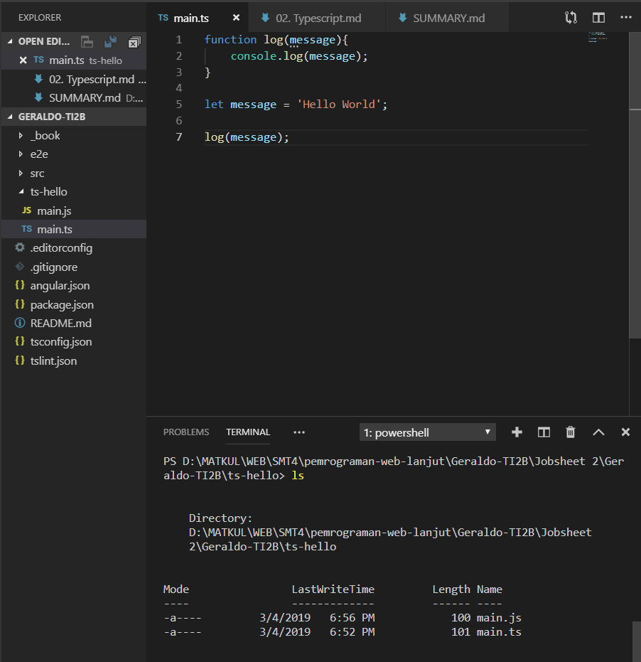
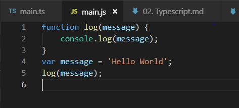
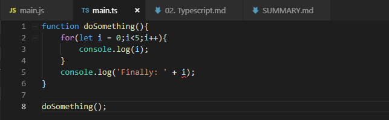
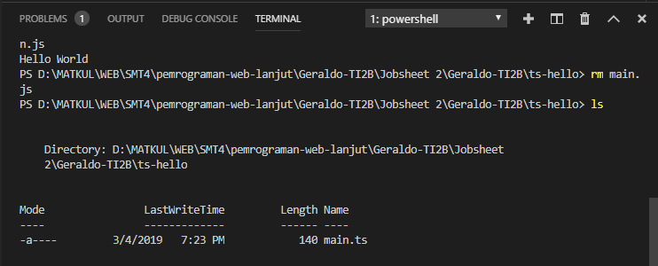
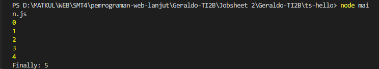
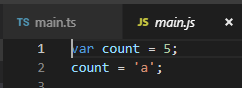
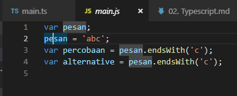
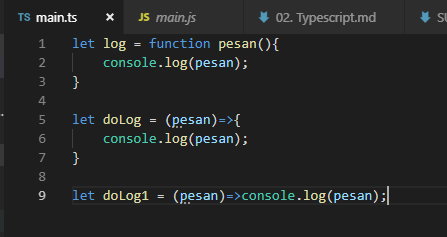

02. Typescript
Praktikum - Bagian 1:Instalasi Typescript
- Buat folder ts-hello

- Buat file main.ts

- Buat file main.ts

Apakah sama isi dari file main.ts dan main.js ?
Beda di main.js menggunakan var

- Hasil main.js

Praktikum – Bagian 2: Declaring Variables
- Merubah main.ts

- Menghapus main.js

- Transpile main.ts

- Hasil main.js

Praktikum - Bagian 3: Types
- main.ts

- main.js

Praktikum – Bagian 4: Type Assertion
- main.ts

- Hasil main.js

Praktikum – Bagian 5: Arrow Function
- main.ts

Praktikum – Bagian 6: Interface
- main.ts

Praktikum – Bagian 7: Classes
- main.ts

Praktikum – Bagian 8: Objects
- main.ts